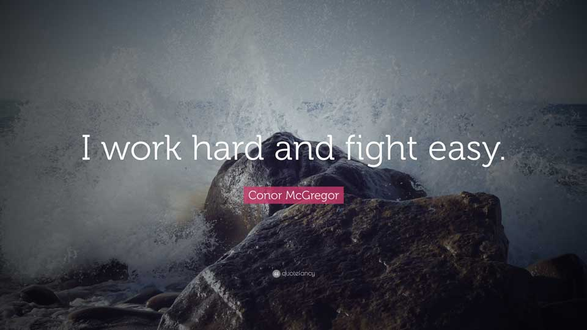

Chuyện nhân sự
Ngày 14 tháng 8 năm 2018
Số là hôm nay đang dọn máy tính, mình muốn lưu lại bài viết "HR Du Hý" của bạn Vũ Trần Thiên Hỷ Khánh Vân.
Nội dung
Mình xin phép được chép y xì lại nội dung của bài viết.
[HR DU KÝ - 10] THAM KHẢO CV NGƯỜI LÀM ITVân định tuần sau mới viết tiếp mà hôm nay chia sẻ công việc cho mấy "men IT" đọc qua cái CiVi đành phải post bài này, các thánh định mai đầu tuần nộp đơn nghỉ việc, nhảy công ty tham khảo nhen (dù nó dài nhưng mình tích cóp từ hàng vài trăm CV Tech). À mà nghỉ thì nghỉ sớm chớ đừng để nửa cuối năm.
Đến một ngày, chuyện cái CV sẽ trở thành "bất hủ" trong làng Nhân sự tự vì nó được nhắc đến nhiều, nhắc đến dày đặc và có mặt ở nhan nhản khắp nơi. Thế nhưng số CV "fail" vì những lý do có thể cải thiện được từ vòng súp pờ soi của các cụ Tuyển dụng vẫn nhiều như mùa lá rụng trong vườn vậy.
Vân thấy cách viết CV của các bạn IT khá nhiều điểm khác biệt so với các công việc trong ngành Retail, FMCG trước đây Vân làm qua nên note lại các bạn xem cần thì dùng. Các bạn search trên mạng ra ngay những bước để có 1 chiếc CV đẹp (giáo dục, kinh nghiệm, kỹ năng, thông tin cá nhân bla bla..), hầu như CV ai cũng có đủ cả. Nhưng về độ chi tiết và đi sâu vào công việc của mình thì các bạn IT làm rất tốt vài phần. Vân chia ra các mục chính và đưa thêm các điểm khác biệt:
MỤC TIÊUTrong rất nhiều hồ sơ Vân xem qua, đa số IT hay ghi rõ mục tiêu của mình vào CV (ví dụ một bạn làm Security muốn trở thành Specialist trong lĩnh vực bảo mật (trung hạn), trở thành IT Manager (Dài hạn)…Các bạn ngành khác hay ghi mục tiêu khá chung chung (trở thành chuyên gia trong tương lai…đọc không rõ chuyên gia chém gió hay chuyên gia vụ gì???). Càng rõ ràng, cụ thể, có thể đạt đến được (phần này các bạn tìm hiểu thêm cách làm mục tiêu SMARTER trên anh Gu Gồ ảnh chỉ) sẽ dễ gây được sự chú ý của người Tuyển dụng, đồng thời nhìn rõ ngay từ đầu xem định hướng của bạn có phù hợp với công ty đang tìm kiếm ở vị trí này để mà "cặp bồ" với nhau không.
THÔNG TIN CÁ NHÂNPhần này Vân khỏi đề cập nhiều, đa số CV đều có đủ họ tên, ngày sinh, địa chỉ, liên hệ, tình trạng hôn nhân (Vân không thích ghi vào CV, đây là chuyện cá nhân). Số điện thoại và địa chỉ email quan trọng nha các bạn, nhiều CV đẹp long lanh, lóng lánh mà không biết khổ chủ đang ở đâu trên trái đất này!?!
ĐÀO TẠOPhần này tương đối giống nhau giữa các ngành, các bạn ghi nơi đào tạo theo trình tự từ gần nhất đến xa hơn. Nếu có chứng chỉ khác cũng cho vào luôn. Công ty CNTT họ cũng xem trọng chứng chỉ để làm thầu, làm hồ sơ năng lực... Nhớ ghi tốt nghiệp ngành gì nhé, ĐH CNTT là 1 cụm từ bao la như sông Hồng vậy.
KINH NGHIỆMMục này là khác nhất giữa CV các Anh Chị IT và ngành khác. CV IT thường có thêm 1 phần TÓM TẮT QUÁ TRÌNH LÀM VIỆC ghi thời gian, tên công việc, công ty một cách ngắn gọn trước khi đi vào cụ thể để nhìn vào là thấy ngay các công ty họ đi qua 1 lượt, biết ngay có phải vị trí này mình đang tìm kiếm hay không.
Đi vào công việc cụ thể, chẳng hạn như một bạn làm Marketing bạn hay ghi công việc theo kiểu liệt kê (lên kế hoạch sự kiện, liên hệ các bên liên quan, làm việc với phòng ban khác, tổ chức sự kiện, làm báo cáo…). Bạn đó đi làm 8 năm qua 5 công ty thì cũng copy y chang từ trên xuống dưới làm thành 5 "điệp khúc" lặp lại (Nếu viết thế thôi các bạn ghi 1 lần thôi rồi từ kinh nghiệm thứ 2 trở đi mở ngoặc "NHƯ TRÊN" là đủ rồi ha).
Những CV IT đầy đủ mình xem, họ cũng bắt đầu bằng mô tả chung về công việc, sau đó là đi vào chi tiết các dự án, sự kiện đã làm tại công ty đấy (ví dụ: Một chuyên viên thiết kế mạng IP ghi kinh nghiệm Thiết kế chi tiết lưu lượng dịch vụ 2G, 3G. Dự án tham gia trực tiếp triển khai mạng truyền tải IP cho ông chú ở Viettel Cameroon phục vụ khai trương dịch vụ vào tháng 10/2016). Kinh nghiệm cụ thể như vậy chỉ có ở trường hợp của chính bạn thôi – Mình quan tâm điều ấy, rất có thể những người đang đọc CV cũng quan tâm để họ thấy được việc bạn đã làm có tương tự hay khác vị trí đang tuyển hiện tại không.
THÀNH TÍCHNgay sau mỗi công ty các bạn làm qua, nếu có thành tích đạt được thì ghi thêm vào. Nếu không, bạn có thể đưa một vài dòng những kinh nghiệm đã học được, những kỹ năng tăng lên khi làm qua việc đó (Tuyển được 10 người trong vòng 1 tuần mà không sử dụng đến gói dịch vụ việc làm chẳng hạn).
Đối với IT, bạn ghi dự án nghiên cứu, dự án tiêu biểu (cân nhắc khi đưa tên KH vào nếu công ty yêu cầu bảo mật).
Càng chi tiết, rõ ràng, ngắn gọn – càng nhanh chóng tạo ấn tượng tốt với người đang cầm chiếc vé gởi xe trên tay suy nghĩ xem để bạn chạy vào bãi hay đưa bảng "HẾT CHỖ - VUI LÒNG SANG BÊN ĐƯỜNG" ra cho bạn.
KỸ NĂNGPhần này thì các Anh IT cực kỳ chi tiết, dùng keyword miễn chê. Trong 5-600 CV năm đầu tiên Vân đọc (NON-IT), chỗ này các bạn hay ghi là giao tiếp tốt, hòa đồng, chịu áp lực công việc, cào phím bằng 10 ngón… thế nọ thế kia. Các bạn IT dùng những từ khóa cụ thể (việc này cũng dễ dàng cho những bạn search CV tìm thấy họ qua các trang tuyển dụng hoặc mạng xã hội). Ví dụ: Routing Protocol: OSPF, EIGRP. Layer2: xDSL, Frame-Relay. TCP/IP, IPv6… chú ý dùng từ khóa mô tả và từ khóa chuyên sâu ví dụ Kỹ sư hệ thống bạn ghi rõ SI hay system admin hay quản lý cơ sở dữ liệu...(sau đó cho từ khóa tương ứng MCSA, MCSE, Linux, MS, DBA....)
Điểm này Vân cũng hay thấy ở CV các bạn Kế toán (Kỹ năng sử dụng Misa, ERP,...).
Cố gắng mô tả bằng từ các bạn nhé, nếu bạn hay đọc báo cáo khoa học hoặc các bài báo chuyên ngành bạn sẽ thấy dưới mục Abstract họ hay để "từ khóa": "..." Để người đọc có thể tìm kiếm, mở rộng thông tin liên quan...
SỞ THÍCH/TÍNH CÁCHPhần này thì vô vàn câu chuyện hài hước xoay quanh. Có lần mình đọc thấy một bạn Sale có sở thích rất ngắn gọn "NGỦ", tính cách "DỄ GẦN, NÓI HƠI NHIỀU 1 TÍ". Đọc tưởng đâu chuyện cười VNExpress hay đăng chớ. Nhưng cười rồi phải nghĩ lại ngay, số CV như thế này không hề hiếm chút nào các bạn ạ. Hãy chú ý ghi sở thích nào có liên quan đến công việc (càng tốt) hoặc phát triển bản thân bạn (đọc sách thì ghi luôn sách gì chớ đừng mở ngoặc "truyện tranh" trong đấy nhé). Bạn hãy tìm hiểu 1 chút xem công việc sắp ứng tuyển vào cần những người có tính cách như thế nào để điều chỉnh một chút cho phù hợp (đừng nộp vào công việc kế toán lại ghi tích cách sôi nổi, thích bay nhảy suốt ngày như chim, thích màu tím, yêu màu vàng, hay lang thang đường phố).
NGƯỜI THAM KHẢOBạn đưa tên, chức vụ, công ty vào cũng được nhưng thông tin cá nhân cung cấp khi có yêu cầu, cũng chẳng cần ghi ngay từ đầu. Vân thì ít khi check qua người trên CV vì chắc chắn khi đưa lên đó là người đã được nhờ vả trước rồi.
CHỐTCHÚ Ý: Viết xong cái CV, chỉnh đi chỉnh lại bạn nhớ để chế độ sửa chính tả cho kỹ, đừng để một khuôn mặt lộng lẫy xinh tươi mà văn vẻ ngả nghiêng là lỗi.
Viết xong rồi quyết định gởi đi, thì đừng quên EMAIL CẦN PHẢI CÓ TIÊU ĐỀ VÀ NỘI DUNG TRONG ĐẤY (chiều nay mình nhận 1 cái CV ghi đúng 1 chữ "RECRUITMENT") – ý là ứng tuyển vị trí Tuyển dụng công ty mình, mở mail ra thấy mỗi cái CV đính kèm không một chữ nào khác trong email. Mình liền rất lịch sự mà trả lời email bạn ấy rằng "CHÚC MAY MẮN LẦN SAU NHÉ"
Rất nhiều điều khác các bạn cần chú ý để không bị loại ngay từ khi chưa có cơ hội nhận lời mời từ công ty yêu thích. Hi vọng rằng những ý nhỏ trên đây sẽ hữu ích cho bạn.
Chúc các bạn thành công
Bài viết của bạn Khánh Vân cũng nói lên được một phần nào suy nghĩ của mình khi nhận CV của một bạn mới vào công ty. Hy vọng các bạn rút ra được gì đó để cải thiện cái nhìn đầu tiên trong mắt người tuyển dụng nhé.
